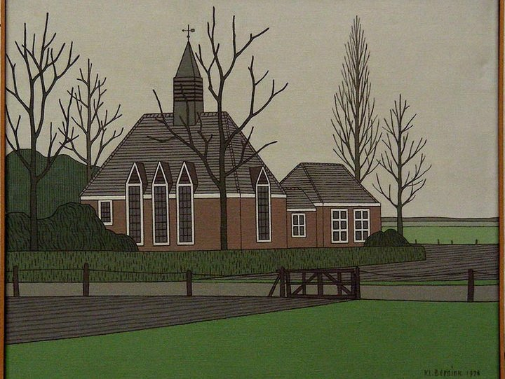

3. Klompenkerkje

Gebouwd in 1903, architect onbekend
Het Klompenkerkje in Glanerbrug is een bescheiden zaalkerk, ooit in gebruik genomen door de Vrije Zendingsgemeente Eben Haëzer. Met zijn rode bakstenen, witte hekwerk en sobere symmetrie belichaamt het een ingetogen spiritualiteit die past bij de tijdgeest van het begin van de twintigste eeuw. Tegenwoordig doet het dienst als woonhuis, maar het gebouw blijft een gemeentelijk monument en een stille getuige van lokale geloofsgeschiedenis.
De kerk staat in een wijk waar eenvoud en gemeenschapszin samenkomen. De naam 'Eben Haëzer' – “Tot hiertoe heeft de Heer ons geholpen” – prijkt nog altijd boven de ingang en herinnert aan de religieuze wortels van het gebouw. De architectuur is functioneel en zonder opsmuk, maar juist daardoor krachtig in zijn uitstraling.
Klaas Bernink koos dit kerkje niet vanwege grandeur, maar vanwege zijn menselijke maat. In zijn schilderij vangt hij de rust van het gebouw, de symmetrie van het geloof en de verbondenheid met de omgeving. De kale bomen, het vlakke gras en de neutrale lucht versterken het gevoel van verstilling. Bernink schildert hier geen religieus icoon, maar een plek van bezinning – een anker in het alledaagse leven. Het Klompenkerkje wordt zo een symbool van eenvoud en trouw, verbeeld door een kunstenaar die zelf geworteld was in dezelfde grond.
Het wordt tegenwoordig gebruikt als woonhuis en is een gemeentelijk monument.